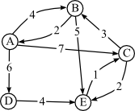

A printable PDF is available.
Assignment 5 -- Graph Adjacency Matrix
Due:
Monday, December 7
Objective: The objective of this assignment is for students to gain experience working with graphs by implementing the graph class using an adjacency matrix (rather than the adjacency list used in the book's implementation). This program is longer and more involved than others assignments in this class, so this assignment will be graded out of 150 points -- in other words, it will count one and a half times as much as your previous full assignments.
What To Do: This programming assignment comes straight out of the book: Do Programming Project (exercise) 42, on page 1019. You will be modifying the book's graph class, and code for that implementation can be found here.
Unfortunately, the graphs given in the book do not match the problem description. The problem asks for the graph to be output twice, and the graphs that your program should have at that time are drawn in Figure 16-29 (page 1020). However, it's not clear what the original input graph is -- it's clearly not Figure 16-28(a) as stated in the problem. Please use the graph below for your original input:
You'll need to encode this in the graph file format used by the book's graph input function.
Note that I'll also test your implementation with different graphs, so please test your implementation thoroughly so that you are confident that your code works correctly in general. My test graphs will have no more than 25 vertices, so it is safe for you to use MAXGRAPHSIZE of 25.
To Turn In: Use the 330submit program (see
Handout 3)
in order to turn in your code, using assignment name assign5.
On the due date, you should turn in a
printout of your code.
Sample Input/Output:
SAMPLE INPUT
You should create a file containing the input graph shown on the previous page.
SAMPLE OUTPUT
Result of breadth-first search from A:
A
B
C
D
E
Graph after first two operations:
A: in-degree 1 out-degree 2
Edges: B (4) D (6)
B: in-degree 1 out-degree 1
Edges: A (2)
D: in-degree 1 out-degree 1
Edges: E (4)
E: in-degree 1 out-degree 0
Edges:
Final graph:
A: in-degree 2 out-degree 2
Edges: B (4) D (6)
B: in-degree 1 out-degree 2
Edges: A (2) F (5)
F: in-degree 2 out-degree 1
Edges: A (3)
D: in-degree 1 out-degree 1
Edges: E (4)
E: in-degree 1 out-degree 1
Edges: F (2)